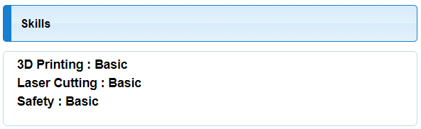

|
|
MY INFORMATION
Name: Ng Yee Fann Rachael
Certified in FabLab saftey, Laser Cutting & 3D Printing

IntroductionI enjoy picking up new skills and trying out new interesting experiences. I love to explore beyond my limits and find new challenges to push myself to become better. Since young, I found that I get fascinated whenever I get to experience more 'hands-on' like activites and always like to explore creating new things with my own hands. My Interests & Hobbies
|
|---|